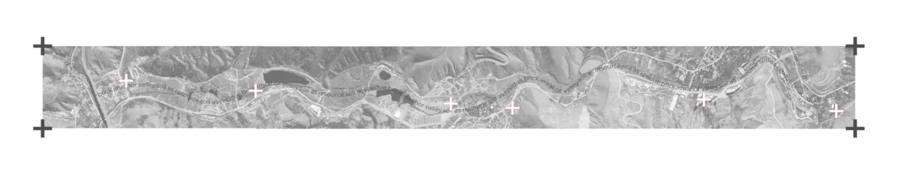

Click on ''+'' s to explore the storyline.
The storyline segment offers an interactive journey into the valley. Through visual collages and oral history, it pieces together the narratives of what once occurred and what actively continues today, aiming to see the story of the soil. While some of the brick factory buildings were abandoned and others were reused, the soil they shared changed drastically due to the shifting volume of water within it. Ultimately, the story reveals how the brick factories permanently rewrote the landscape, transforming the soil from a living ecological resource into a stagnant, artificial residue.
(Below, you can also find our full interview with the former factory owner.)
Interviewer:Hello. Could you tell us about the brick factories in this area?
Co-owner:Between 1965 and 1976, seventeen brick factories were established in Mühye. The factory near the ponds was established in 1965. The one near the viaduct was built by us in 1966. Between 1996 and 1999, the factories lost their operating licenses, so we could no longer extract soil from our clay sources. As a result, the factories gradually shut down.
Interviewer:We heard that there was a factory operating until two or three years ago in the lower part of the valley. Could you tell us about it?
Co-owner:That was Ceylan Brick Factory. It was active until about three or four years ago. They had invested heavily in the facility. Since it produced more bricks than the other factories, it remained in operation much longer. Apart from that, most of the factories had already closed by around 2000.
Interviewer:Do you know anything about the factories established in the 1930s?
Co-owner:I think there were brick workshops here, in Gölbaşı, in Kepekli, and also in Ahlatlıbel. But the one in Ahlatlıbel dates back to the 1950s and was fully automated.
Interviewer:Where did the factories obtain their raw material? Was it extracted from the valley?
Co-owner:Yes, the soil was taken from the valley itself. Over time, the extraction areas filled with water and the clay deposits ran out. The raw material ran out. The soil that accumulated in the valley was suitable for brick production. Bringing soil from elsewhere would have been difficult and costly.
Interviewer:We have read that the bricks produced here were used throughout Ankara. Is that true?
Co-owner:They were used in almost every construction project in Ankara. Until cinder blocks (briket) began arriving from Nevşehir, these bricks were used in every district of the city. But as I said the excavations created ponds. When we were operating, we pumped out the water, excavated the soil, aerated it, and then used it for brick production. You cannot make good bricks from wet, muddy soil.
Interviewer:Could you also describe the firing process?
Co-owner:We were partners in four of the seventeen factories. The bricks were first left to dry on racks. Afterwards, workers manually stacked them inside the kilns. We crushed coal into powder and used it as fuel. Ventilation systems carried the heat through the kiln, allowing the bricks to fire evenly.
Interviewer:I see. I also wonder if the livestock farms were in the area already present at that time?
Co-owner:When it was a village, almost every family owned a few cows or sheep but it was not a serious activity. People produced milk for themselves and sold any surplus. Gardening was also common. When the factories opened, local villagers, along with workers arriving from places such as Samsun, Çorum, Konya, and Yozgat, became brick workers.
Interviewer:So would it be fair to say that the factories became the main source of income in the area?
Co-owner:Before the factories of 1965, people produced handmade bricks, known as harman bricks. That was the situation in the 1950, handmade production was common. Later, production shifted to hollow block bricks.
Interviewer:We know that large amounts of excavation debris have been dumped in the valley. I assume you witnessed that as well.
Co-owner:Whenever we extracted soil, pits were formed. There were ponds in those areas, but they were later filled. The valley became Ankara's main dumping ground for excavation waste. Everyone would bring their waste here. Now the valley has been opened for development. The factories are gone.
Interviewer:Do you have any photographs from those years?
Co-owner:No, we never took photographs. It never even crossed our minds. Cameras were not very common back then.
Interviewer:Is there any plan for these abandoned factories?
Co-owner:Not specifically for the factories. At the moment, a canal is being constructed from the start to Nata Vega. Commercial areas and recreational spaces are planned. They are currently carrying out geotechnical surveys.
Interviewer:As someone who has lived here for a long time, what do you think about that project?
Co-owner:We have high expectations. We gave up the factory business. We received development titles in 2016, but not a single nail has been driven into the ground in nearly ten years. That's the situation.
Interviewer:I see. One final question, there are no active brick factories left in the area today, correct?
Co-owner:None at all.
Interviewer:Not even in the uppermost parts of the valley?
Co-owner:None. They're all gone. Nowadays people produce Ytong blocks and cinder blocks instead.
Interviewer:Seeing so many brick fragments mixed with the soil, we assumed brick production had continued until recently.
Co-owner:No, no. The last one was Ceylan Brick Factory, and now it has become a ruin as well. We stopped operating in 1996. That's how it is.
Interviewer:Okay, I think that's all. Thank you very much.